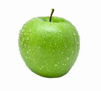

The Granny Smith, also known as a green apple or sour apple, is an apple cultivar that originated in Australia in 1868. It is named after Maria Ann Smith, who propagated the cultivar from a chance seedling. The tree is thought to be a hybrid of Malus sylvestris, the European wild apple, with the domesticated apple Malus domestica as the polleniser.
The fruit is hard, firm and with a light green skin and crisp, juicy flesh. The flavour is tart and acidic. It remains firm when baked, making it a popular cooking apple used in pies, where it can be sweetened. The apple goes from being completely green to turning yellow when overripe. The US Apple Association reported in 2019 that the Granny Smith was the third most popular apple in the United States of America.
